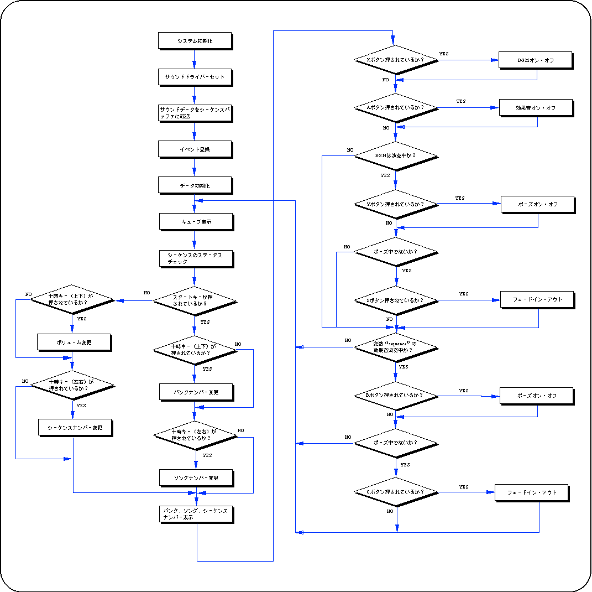
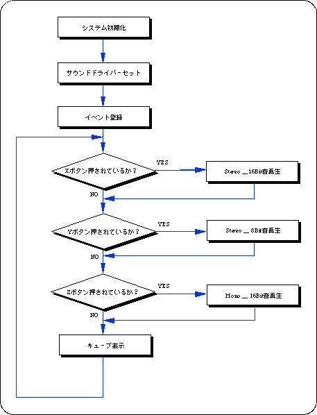

★SGL User's Manual
★PROGRAMMER'S TUTORIAL
★SGL User's Manual
★PROGRAMMER'S TUTORIAL
本章では、サウンドコントロールライブラリを使って、セガサターンでサウンドを出力する際の手順と注意点について説明します。
┏━━━━━━┓ ┏━━━━━━┓ ┏━━━━━━┓ ┃サウンド ┃ ┃ ┃ ┃ ┃ ┃ライブラリ ┃←→┃ マスター ┃←→┃ スレーブ ┃ ┠──────┨ ┃ ＣＰＵ ┃ ┃ ＣＰＵ ┃ ┃ ┃ ┃ ┃ ┃ ┃ ┃ ┃ ┗━━━━━━┛ ┗━━━━━━┛ ┃ ┃ ↑ ┃ ┃ ↓ ┃ ┃ ┏━━━━━━┓ ┃ ┃ ┃ サウンド ┃ ┃ ┃ ┃ ドライバ ┃ ┏━━━━━━━━┓ ┃ ┃ ┠──────┨ ┃サウンドＣＰＵ ┃ ┗━━━━━━┛ ┃ コマンド ┃←→┃ＭＣ６８０００ ┃ ┃ バッファ ┃ ┃ ┃ ┃ ┃ ┗━━━━━━━━┛ ┠──────┨ ↓ ┃ ┃ ┏━━━━━┓ ┃ サウンド ┃ ┃ＰＣＭ音源┃→スピーカ ┃ データ ┃ ┗━━━━━┛ ┗━━━━━━┛ 共有ＲＡＭ
┏━━━━━━━━━━━━━━┓ ┃ サウンドドライバのセット ┃ ┃ とＭＣ６８０００の起動 ┃ ┗━━━━━━━━━━━━━━┛ ↓ ┏━━━━━━━━━━━━━━┓ ┃ サウンドデータのセット ┃ ┗━━━━━━━━━━━━━━┛ ↓ ┏━━━━━━━━━━━━━━┓ ┃ ＢＧＭ演奏／効果音、 ┃ ┃ ＰＣＭ音源の制御 ┃ ┗━━━━━━━━━━━━━━┛
┌ ┐ │slDMACopy(sounddat , (void *)0x25a0b000 , sizeof(sounddat)) ;│ │slDMAWait() ; │ └ ┘
Song : 曲(効果音)番号 Prio : 音源を使用する際の優先順位 Volume: 音量 Rate : Volumeに達するまでの時間
slBGMTempo(Sint16 Tempo) ; /* テンポの変更 */ slBGMFade(Uint8 Volume , Uint8 Rate) ; /* 音量の変更 */ slBGMOff() ; /* 演奏の停止 */ slBGMPause() ; /* 演奏の一時停止 */ slBGMCont() ; /* 演奏の再開 */ slBGMStat() ; /* 演奏中であるか調べる */
Song : 曲(効果音)番号 Prio : 音源を使用する際の優先順位 Volume: 音量 Pan : 左右の音量の振り分け
slSequenceTempo(Uint8 Seqnm , Sint16 Tempo) ; /* テンポを変更 */ slSequenceFade(Uint8 Seqnm , Uint8 Volume , Uint8 Rate) ; /* 音量を変更 */ slSequencePan(Uint8 Seqnm , Uint8 Pan) ; /* 発生方向を変更 */ slSequenceOff(Uint8 Seqnm) ; /* シーケンスを停止する */ slSequencePause(Uint8 Seqnm) ; /* シーケンスを一時停止する */ slSequenceCont(Uint8 Seqnm) ; /* 一時停止中のシーケンスを再開する */ slSequenceStat(Uint8 Seqnm) ; /* シーケンスが演奏中であるかを調べる */
pdat : ＰＣＭストリームの再生モード等のＰＣＭ型構造体データ data : ＰＣＭストリームの音源データ size : ＰＣＭストリームデータのサイズ
ＰＣＭ型構造体データは以下のような構成で、ＰＣＭストリームの再生パラメータを指定するために使用されます。
図14-4 PCM型構造体データ
typedef struct{
Uint8 mode; /* Mode */
Uint8 channel; /* PCM Channel Number */
Uint8 level; /* 0 ~ 127 */
Sint8 pan; /* -128 ~ +127 */
Uint16 pitch;
Uint8 eflevelR; /* Effect level for Right(nomo) 0 ~ 7 */
Uint8 efselectR; /* Effect select for Right(mono) 0 ~ 15 */
Uint8 eflevelL; /* Effect level for Left(mono) 0 ~ 7 */
Uint8 efselectL; /* Effect select for Left(mono) 0 ~ 15 */
}PCM;
mode :_Stereo or _Mono、_PCM16Bit or _PCM8Bitを指定します
channel :PCM再生チャンネル(この関数がセットします)
level :音量
pan :音量の左右の振り分け
pitch :再生レート(音程が変化します)
eflevelR :エフェクトをかける度合(右チャンネル用)
efselectR :エフェクトナンバー(右チャンネル用)
eflevelL :エフェクトをかける度合(左チャンネル用)
efselectL :エフェクトナンバー(左チャンネル用)
slPCMOff(PCM *pdat) ; /*演奏を停止する*/ slPCMParmChange(PCM *pdat) ; /*パラメータを変更する*/ slPCMStat(PCM *pdat) ;/*指定したＰＣＭチャンネルが演奏中であるかを調べる*/
slSndVolume(Uint8 Volume) ; /* 全体音量 */ slSoundAllOff() ; /* 全サウンドシーケンスの停止 */ slDSPOff() ; /* 効果用ＤＳＰの停止 */ slSndMixChange(Uint8 Tbank , Uint8 Mixno) ; /* ミキサーの切替え */ slSndMixParmChange(Uint8 Effect , Uint8 Level , Uint8 Pan) ; /* ミキサーのパラメータ変更 */
25A00000┏━━━━━━━━━━━━┓
┃ ┃
┃ 例外ベクタ等 ┃
┃ ┃
25A00500┣━━━━━━━━━━━━┫
┃ ┃
┃ カレントマップデータ ┃
┃ ┃
25A00700┣━━━━━━━━━━━━┫
┃ ┃
┃ コマンドバッファ ┃
┃ ┃
25A00800┣━━━━━━━━━━━━┫
┃ ┃
┃ サウンドドライバー ┃
┃ ┃
25A0A000┣━━━━━━━━━━━━┫
┃ ┃
┃ マップデータ ┃
┃ ┃
25A0B000┣━━━━━━━━━━━━┫
┃ ┃
┃ 音色、シーケンス ┃
┃ ┃
25A78000┣━━━━━━━━━━━━┫
┃ ┃
┃ ＰＣＭ再生バッファ ┃
┃ ┃
25A7FFFF┗━━━━━━━━━━━━┛
バンク ソング 内 容 ------ ------ ------- ０ ０ 曲（ループ無し） １ 曲（ループあり） １ ０ パシッ（Ｃ３） １ パシッ（Ｄ３） ２ パシッ（Ｅ３） ３ パシッ（Ｆ３） ４ パシッ（Ｇ３） ５ パシッ（Ａ３） ６ パシッ（Ｂ３） ７ パシッ（Ｃ４） ２ ０ イェー ３ ０ 長いバイオリンの音 １ 短いバイオリンの音（ループ）
フロー14-1 sampsnd1：BGMと効果音の再生テスト

フロー14-2 sampsnd2：PCM音源再生テスト

関数型 | 関 数 名 | パ ラ メ ー タ | 機 能 |
|---|---|---|---|
| void | slInitSound | void *drv,Uint32 drvsz,void *map,Uint32 mapsz | サウンドドライバーのセットとサウンドコントロールＣＰＵの初期化 |
| Bool | slBGMOn | Uint16 Song,Uint8 Prio,Uint8 Volume,Uint8 Rate | ＢＧＭ演奏の開始 |
| Bool | slBGMTempo | Sint16 Tempo | ＢＧＭ演奏速度の変更 |
| Bool | slBGMFade | Uint8 Volume,Uint8 Rate | ＢＧＭ演奏音量の変更 |
| Bool | slBGMOff | void | ＢＧＭ演奏の停止 |
| Bool | slBGMPause | void | ＢＧＭ演奏の一時停止 |
| Bool | slBGMCont | void | 一時停止中ＢＧＭの演奏再開 |
| Bool | slBGMStat | void | ＢＧＭ再生中チェック |
| Uint8 | slSequenceOn | Uint16 Song,Uint8 Prio,Uint8 Volume,Uint8 Rate | 指定した効果音の発生開始 |
| Bool | slSequenceTempo | Uint8 Seqnm,Uint16 Tempo | 指定した効果音の速度変更 |
| Bool | slSequenceFade | Uint8 Seqnm,Uint8 Volume,Uint8 Rate | 指定した効果音の音量変更 |
| Bool | slSequencePan | Uint8 Seqnm,Uint8 Pan | 指定した効果音の発生方向変更 |
| Bool | slSequenceOff | Uint8 Seqnm | 指定した効果音の発生停止 |
| Bool | slSequencePause | Uint8 Seqnm | 指定した効果音の発生一時停止 |
| Bool | slSequenceCont | Uint8 Seqnm | 一時停止中効果音の発生再開 |
| Bool | slSequenceStat | Uint8 Seqnm | 指定した効果音の再生中チェック |
| Sint8 | slPCMOn | PCM *pdat,void *data,Uint32 size | ＰＣＭ音源による演奏開始 |
| Bool | slPCMOff | PCM *pdat | ＰＣＭ音源による演奏停止 |
| Bool | slPCMParmChange | PCM *pdat | ＰＣＭ再生用パラメータの変更 |
| Bool | slPCMStat | PCM *pdat | 指定したＰＣＭチャンネルの再生中チェック |
| Bool | slSndVolume | Uint8 Volume | 全体の音量セット |
| Bool | slSoundAllOff | void | 全てのサウンドシーケンスの演奏停止 |
| Bool | slDSPOff | void | ＤＳＰ演奏の停止 |
| Bool | slSndMixChange | Uint8 Tbank,Uint8 Mixno | 音色バンクに対応するミキサの切替え |
| Bool | slSndMixParmChange | UInt Effect,Uint8 Level,Uint8 Pan | ミキサのパラメータ変更 |
★SGL User's Manual
★PROGRAMMER'S TUTORIAL